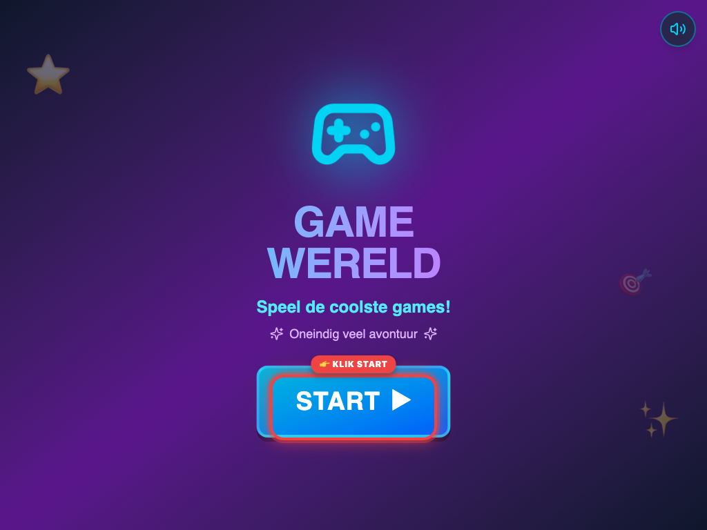

01
✅ Getest & Functioneel
Welkomstscherm Game-Wereld
🎯 Wat we testen
Verifiëren dat het welkomstscherm geladen wordt en de startknop interactief is.
💡 Waarom we dit testen
Kinderen moeten een intuïtieve, uitnodigende start ervaren zonder drempels of ingewikkelde logins.
⚙️ Hoe de functionaliteit werkt
De landingspagina initialiseert de lokale PWA en toont de visuele titelbalk en startknop.
👉 Concrete Actiestap
Klik op de grote 'START' knop om door te gaan naar het profieloverzicht.

Rode cirkel = Waar te klikken
Screenshot: stap-01-welkom-startknop.png